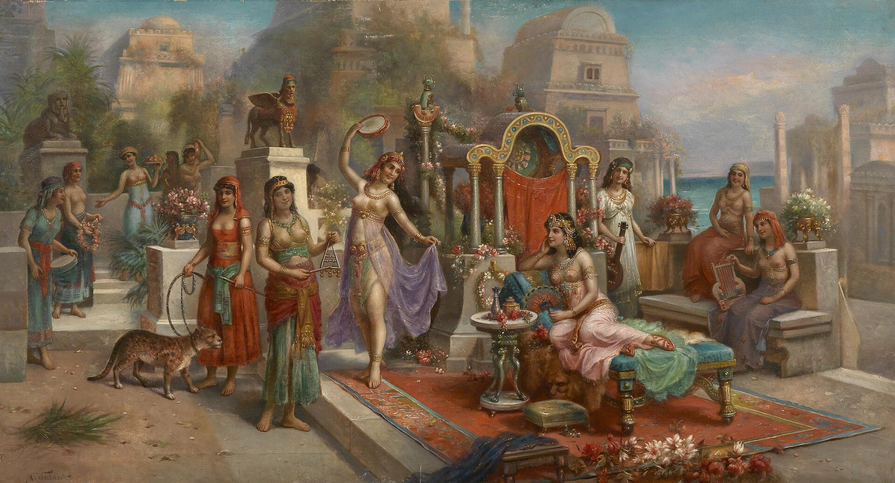

Unlike typical gardens, these were described as towering terraces filled with trees, flowers, and flowing waterfalls—suspended high above the ground, appearing to "hang" in the air. They may have been built on a multilevel structure, using advanced irrigation systems that drew water up from the Euphrates River—a remarkable engineering feat for the time.
"The Hanging Gardens were said to float like a dream above the desert sands."
"A miracle of green in a world of dust—perhaps real, perhaps imagined."

Unknown author
The Hanging Gardens of Babylon are one of the most mysterious wonders of the ancient world. Said to have been built by King Nebuchadnezzar II around 600 B.C., the gardens were reportedly created for his wife, Queen Amytis, who longed for the lush, green mountains of her homeland.

By H. Waldeck - Dorotheum

Heritage Images
The Hanging Gardens of Babylon are one of the most mysterious wonders of the ancient world. Said to have been built by King Nebuchadnezzar II around 600 B.C., the gardens were reportedly created for his wife, Queen Amytis, who longed for the lush, green mountains of her homeland.
-Whether myth or memory, the gardens remain one of humanity’s most beautiful dreams.-